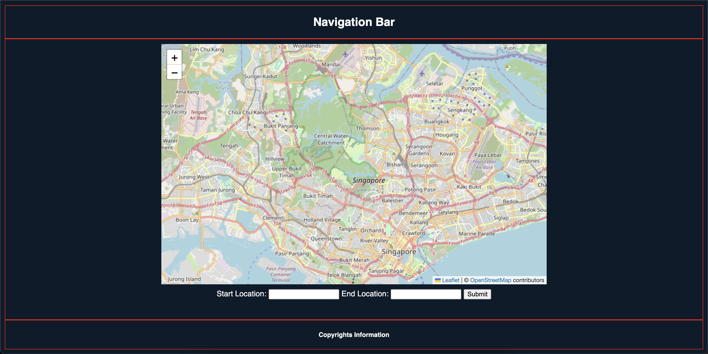

-
AI Chatbot
A chatbot with Natural Language Processing using Meta's WitAI integration
-

A GenAI chatbot that integrates Meta WitAI APIs for speech training to produce natural human-like speeches. Built with HTML, CSS, and JavaScript for Frontend. Java, Springboot, MongoDB and AWS for Backend.
-
Stock Prediction
A webapp that predicts stock prices by training a Machine Learning Model on previous stock prices
-

Produces stock price prediction by using LSTM-based predictive model to forecast stock prices in real-time, utilizing historical stock data fetched from Yahoo Finance API
-
Coin Bank
IN PROGRESS : A webapp that calculates Malaysian coins by using Computer Vision Models to detect them.
-

Using Computer Vision model to detect Malaysian coins and calculate them. Users can take image through the webapp where the image is stored with user's consent, to use for the model's training material. It helps in automating the inconvenience of calculating each coin manually.
-
Singapore Pathfinder
IN PROGRESS : A webapp that produces routes of network for logistic drivers of Singapore
-

A webapp that produces a road of network for logistic drivers of Singapore. It produces the best path to take, most efficient path to tackle to reach every location in time, and considers path that also cannot be taken based on hazardous material restrictions for driver and civilian safety .
-
University Webapp Instrument Project
A webapp that plays, visualise, and imitate songs
-

A university webapp project made to play four kinds of instruments a Piano, Kalimba, Flute, and Xylophone. It can also visualise sound waves using simple graphics and use the instrument to play a favourite existing songs of yours.
-
Mini Projects
A collection of mini projects
-

Mini projects that I build to learn and explore some form of creativity or knowledge.